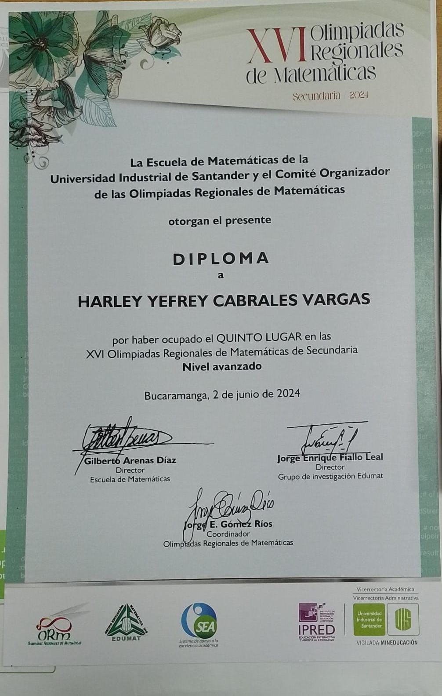

|
|
Informacion Academica
Soy un bachiller tecnico comercial graduado
del colegio eliseo pinilla rueda de villanueva
Santander, cuento con educacion basica primaria
y educacion secundaria he hecho varios cursos de
matematicas como semilleros en la uis y actualmente
me encuentro estudiando desarrolo en software con
campuslands.
|
Proyectos personales
Proyecto Python: Hice un programa que simula
una plataforma de estudiantes, que tenia el
propositito de llevar registro sobre notas
y actividades e informacion de estudiantes
en eqipos de trabajo de 2 personas.
Stack Tecnologico
Pseint: Alto
Python: Intermedio-Alto
Scrum: Intermedio
github: Intermedio-Alto
html: Principiante
css: Principiante
Ingles: Basico
Logros
*Logre conseguir graduarme de bachiller
tecnico comercial
*Obtuve un ICFES alto que me sirvio para
pasar a la uis
*Consegui el 5 puesto en las olimpiadas
regionales de matematicas uis
*Pase la prueba de admision para poder
estidiar en campuslands
Contactos
Yenny Alejandra Prada Bueno
yennyale@gmail.com
322 2090576
Sergio yohany gomez
sergioyoh@gmail.com
314 3391998
Helda Yaneth Vargas Barragan
yanethvargas@gmail.com
322 9479788
|
Informacion Personal
Harley Yefrey Cabrales Vargas
Calle 12A #9-68 Villanueva Santander
arleycabralesvargas@gmail.com
https://github.com/harleyyefreycabralesvargas
https://www.linkedin.com/in/harley-yefrey-
cabrales-vargas-undefined-6ba962355/?lipi
=urn%3Ali%3Apage%3Ad_flagship3_job_home%3
BIDfH0X9fTlSA4P4No4MIHQ%3D%3D
|
Habilidades
*Cuento con un muy buen razonamiento logico
matematico
*Se identificar rapidamente problemas para
darle una solucion efectiva
*Se plantear soluciones rapidas a los
diversos problemas que surjan
*Tengo un rapido apredizaje acerca de temas
nuevos
*Soy muy bueno entablando relaciones con
nuevos compañeros de trabajo
*Soy muy persistente en mis trabajos
*Manejo adecuadamnete mi tiempo para la
realizacion de trabajos
*Soy muy adaptable a los problemas
|

>